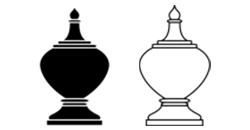

หมากรุกไทย
ขุน

เป็นตัวหมากที่ขนาดใหญ่ที่สุดในหมากทรงผอบสูง(หรือทรงเจดีย์) มีความสำคัญที่สุดในกระดาน มีเพียงตัวเดียวตลอดทั้งเกม กติกาการเดินขุนมีดังนี้
เดินได้ในทุกทิศทางรอบตัวทั้ง 8 ช่อง สามารถกินหมากในช่องที่เดินได้

ตำแหน่งการเดิน
ไม่สามารถเดินไปยังตากินของฝ่ายตรงข้ามได้ ซึ่งหากไม่สามารถเดินหมากตัวอื่นได้ด้วยจะถือว่าหมากจน และเกมจะจบลงโดยถือว่าเสมอกัน
|
 |
ช่องที่ไม่สามารถเดินได้ |
หมากจน |
เมื่อขุนถูกเล็งกิน(รุก) จะต้องแก้ไขการรุกนั้นก่อนเสมอ โดยการเดินหนี, เดินหมากอื่นมาป้องกัน หรือกินหมากที่รุกอยู่ หากไม่สามารถแก้ไขการรุกได้จะถือว่ารุกฆาตและเกมจะจบลงโดยฝ่ายที่ถูกรุกฆาตเป็นฝ่ายแพ้
|
 |
แก้ไขการถูกรุก |
รุกฆาต |
แบบทดสอบ